Christmas & Winter
Gingerbread, snow, winter sports, Christmas, and the New Year – resources for the cold season.
77 resources
Subject
Grade

Lunar New Year Reading Comprehension Passages | Winter Scavenger Hunt 5-6

Window Art Workshop Shapes Counting Role Play | Winter Math Center Grade 1

Bird Feeder Counting Math Role Play | Winter Math Center Grade 1
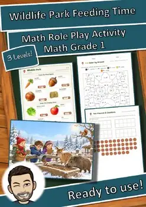
Wildlife Park Winter Feeding Math Role Play | Winter Math Center Grade 1

Holiday Package Station Weight Role Play | Christmas Math Center Grade 4

Geometry Reading Comprehension Passages | Math Scavenger Hunt 7-8

The Travel Agency Map Scale Role Play | Winter Math Center Grade 4

Salt on Ice Reading Comprehension Passages | Science Scavenger Hunt 7-8
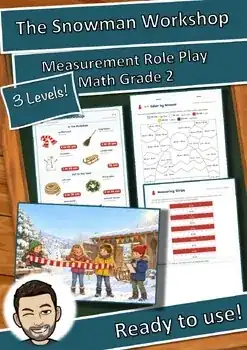
The Snowman Workshop Measurement Role Play | Winter Math Center Grade 2
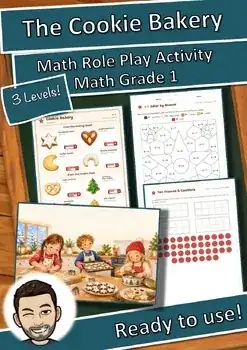
Cookie Bakery Addition Subtraction Role Play | Winter Math Center Grade 1

The Christmas Bakery Weight Role Play | Christmas Math Center Grade 3
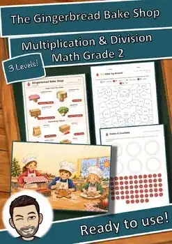
Gingerbread Bake Shop Multiplication Role Play | Winter Math Center Grade 2

Holiday Meal Reading Comprehension Passages | Life Skills Scavenger Hunt 7-8
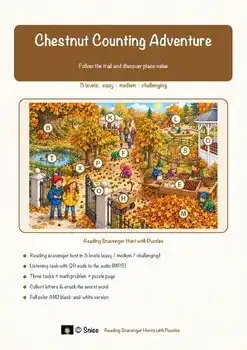
Place Value Reading Comprehension Passages | Math Scavenger Hunt 1-2
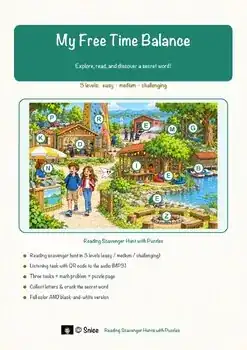
Free Time Reading Comprehension Passages | Life Skills Scavenger Hunt 5-6

Desert Reading Comprehension Passages | Science Scavenger Hunt 3-4
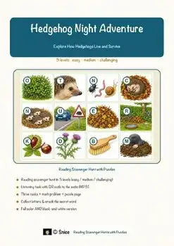
Hedgehog Reading Comprehension Passages | Science Scavenger Hunt 5-6

Robot Cleaner Reading Comprehension Passages | Science Scavenger Hunt 3-4

Winter Wildlife Reading Comprehension Passages | Science Scavenger Hunt 3-4

Night Hike Reading Comprehension Passages | Science Scavenger Hunt 3-4

Winter Plants Reading Comprehension Passages | Science Scavenger Hunt 3-4

The Cozy Winter Room Reading Comprehension | Winter Scavenger Hunt 3-4

Snowmaking Science Reading Comprehension Passages | Science Scavenger Hunt 3-4

Climbing Reading Comprehension Passages | PE Scavenger Hunt 3-4

Husky Reading Comprehension Passages | Science Scavenger Hunt 3-4

Ice Rink Reading Comprehension Passages | Science Scavenger Hunt 3-4

Winter Sound Reading Comprehension Passages | Science Scavenger Hunt 3-4

Winter Road Crew Reading Comprehension Passages | Science Scavenger Hunt 3-4

Pumpkin Farm Reading Comprehension Passages | Science Scavenger Hunt 3-4

Icebreakers Reading Comprehension Passages | Science Scavenger Hunt 3-4

Christmas Tree Reading Comprehension Passages | Winter Scavenger Hunt 3-4

Lantern Night Reading Comprehension Passages | Autumn Scavenger Hunt 3-4

Igloo Reading Comprehension Passages | Science Scavenger Hunt 3-4
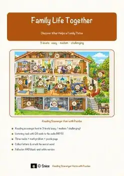
Family Life Reading Comprehension Passages | Life Skills Scavenger Hunt 5-6

Fall & Winter Reading Comprehension Passages | Trees Science Scavenger Hunt

Polar Research Station Reading Scavenger Hunt | Winter Science Escape Activity

Snow Science Reading Scavenger Hunt | Winter Escape Activity Grades 3-4

Animals in Winter Reading Scavenger Hunt | Hibernation Science Escape Activity
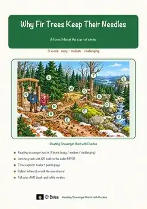
Why Fir Trees Keep Their Needles Reading Scavenger Hunt | Trees in Winter
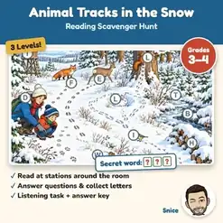
Animal Tracks in the Snow Reading Scavenger Hunt | Winter Escape-Style Reading

Arctic Animals Reading Comprehension BUNDLE | Polar Bears & Huskies

Winter Reading Comprehension BUNDLE | Snow, Winter Sports & New Year
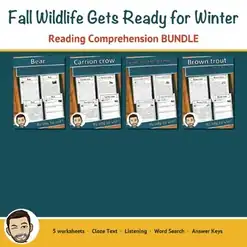
Fall Animals Worksheets Bundle | Grades 5-8 | How Wildlife Prepares for Winter
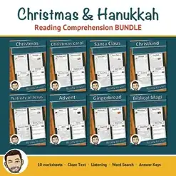
Christmas Reading Comprehension Passages BUNDLE | Cloze & Word Search
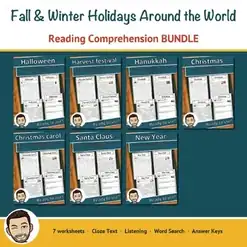
Holidays Around the World Reading Comprehension BUNDLE | Fall & Winter
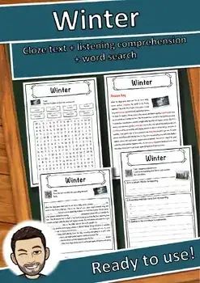
Winter Reading Comprehension Passage & Questions | Word Search Grades 5-8
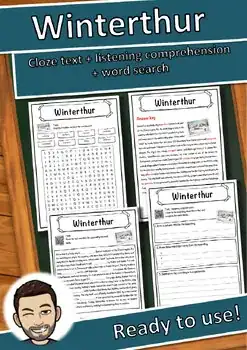
Winterthur – Reading Comprehension: Cloze Text, Listening Task & Word Search
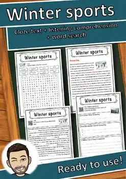
Winter sports – Reading Comprehension: Cloze Text, Listening Task & Word Search
No resources found – try a different search term or filter.